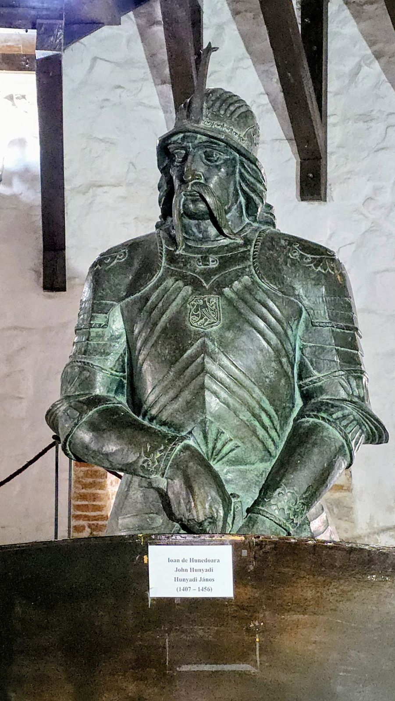

Journey 02 · Hunedoara Note 5 of 12 Chronicles of
Chronicles of Romania: John Hunyadi and Matthias Corvinus
John Hunyadi and Mattias Corvinus

There are many interesting facts about John Hunyadi. He was an innovative master of military skills, employing both professional soldiers and local peasantry against invaders. He won several decisive battles against the Ottomans, and the pope ordered that European churches ring their bells at noon to commemorate his Belgrade victory even today. He was a popular and respected statesman and earned a great deal of wealth during his life. For more than 60 years, his victories and efforts kept the Turks from invading the Kingdom of Hungary.
Even after his death, his popularity helped propel the election of his son, Mattias Corvinus, to the position of king at only 14 years old. Taking after his father in political and military skill, Mattias established one of the oldest professional armies of medieval Europe with the Black Army of Hungary, reformed the administration of justice, promoted careers of talented people based on their skills and not the status of their birth, and was a patron of the arts and sciences, maintaining one of the largest collections of books in Europe in his royal library.
Under Mattias, Hungary became the first country outside of Italy to embrace the Renaissance, and he earned the title Matthias the Just.
Legends and stories say that he would wander among his subject in disguise to deliver justice, and at the end of his life he went, like Arthur of Camelot, to be a “King sleeping under the mountain”, ready to return in the time of his people’s greatest need.
But it is not John Hunyadi’s amazing parenting of a legendary king, the story of the raven and the ring, or even the fact that he was the owner of immense land areas, totaling approximately four million cadastral acres (That’s about the size of Alaska), which had no precedent before or after in the Kingdom of Hungary.
No, the most interesting thing about John Hunyadi is that he earned the nickname “Turk-buster” from his contemporaries.
John “Turk-Buster” Hunyadi.
Legend.
Mentioned in
Originally published at fieldnotesfromabroad.com/2026/03/09/chronicles-of-romania/